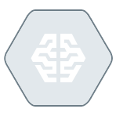

Tools
tools.RmdTools which provide various enhancements to Keras.
GPUs |
It’s highly recommended, although not strictly necessary, that you run deep-learning code on a modern NVIDIA GPU. Some applications – in particular, image processing with convolutional networks and sequence processing with recurrent neural networks – will be excruciatingly slow on CPU, even a fast multicore CPU. |
| CloudML  |
The cloudml package provides an R interface to Google Cloud Machine Learning Engine, a managed service that provides on-demand access to training on GPUs, hyperparameter tuning to optmize key attributes of model architectures, and deployment of trained models to the Google global prediction platform. |
| Training Flags |
Tuning a model often requires exploring the impact of changes to many hyperparameters. The best way to approach this is generally not to progressively change your source code, but rather to define external flags for key parameters which you may want to vary. |
Training Runs |
The tfruns package provides a suite of tools for tracking and managing TensorFlow training runs and experiments from R. Track the hyperparameters, metrics, output, and source code of every training run, visualize the results of individual runs and comparisons between runs. |